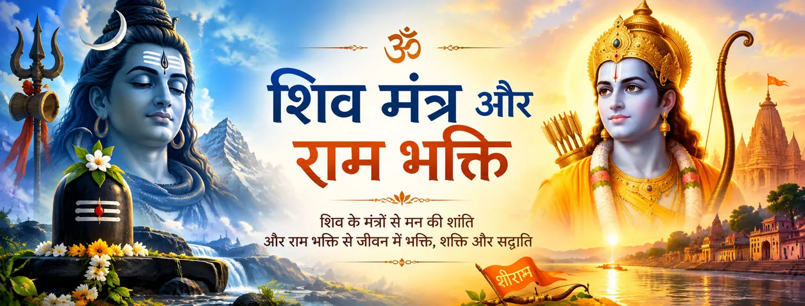

शिव महान मंत्र का जप करते हैं
बालकाण्ड 11 राम-नाम को उस महान मंत्र के रूप में बताता है जिसे महेश्वर जपते हैं। यही शिव की मंत्र-साधना और राम-भक्ति के बीच इस पृष्ठ का सबसे स्पष्ट पाठ-संबंध है।

भक्ति और प्रतीक
रामचरितमानस मंत्र और भक्ति को ईश्वर-स्मरण के परस्पर जुड़े हुए मार्गों के रूप में प्रस्तुत करता है। राम-नाम की महिमा के प्रसंग में शिव को राम-भक्ति से बाहर नहीं रखा गया; स्वयं महेश्वर को पवित्र नाम का जप करने वाला और उसकी आध्यात्मिक शक्ति को जानने वाला बताया गया है।
इस पृष्ठ पर “शिव मंत्र” का प्रयोग सावधानी से किया गया है: यहाँ मुख्य ध्यान उस पाठ-चित्रण पर है जिसमें शिव स्वयं पवित्र नाम-जप के साधक हैं, विशेषकर राम-नाम के, और फिर यह समझने का प्रयास किया गया है कि मंत्र-केंद्रित स्मरण राम-भक्ति से कैसे जुड़ता है।
रामचरितमानस · बालकाण्ड
ग्रंथ शिव के नाम के साथ संबंध का सीधा चित्र देता है और जप को ही राम-भक्ति की धर्मदृष्टि का एक अंग बनाता है।
बालकाण्ड 11 राम-नाम को उस महान मंत्र के रूप में बताता है जिसे महेश्वर जपते हैं। यही शिव की मंत्र-साधना और राम-भक्ति के बीच इस पृष्ठ का सबसे स्पष्ट पाठ-संबंध है।
यह प्रसंग नाम की शक्ति की स्तुति करता है और उसके स्मरण को आध्यात्मिक फल से जोड़ता है। यहाँ नाम को केवल किसी देवता के परिचय-शब्द तक सीमित नहीं किया गया है।
बालकाण्ड की शिक्षा महेश्वर, काशी और राम-नाम की मुक्तिदायक महत्ता को जोड़ती है। इससे पवित्र जप आध्यात्मिक मुक्ति की व्यापक दृष्टि में स्थान पाता है।
शिव की भूमिका दिखाती है कि ग्रंथ राम का सम्मान करते हुए शिव को भी केंद्रीय भक्तिपरक स्थान दे सकता है। दोनों पहचानें पवित्र नाम के प्रति श्रद्धा में मिलती हैं।
मंत्र और भक्ति
मंत्र भक्ति को बार-बार किए जाने वाले स्मरण का रूप देता है; भक्ति उस स्मरण को प्रेम की दिशा देती है। रामचरितमानस शिव और राम-नाम के माध्यम से इन दोनों को साथ रखता है।
मंत्र का स्वभाव ही पुनरावृत्ति से जुड़ा है। शिव द्वारा राम-नाम के जप का चित्रण पुनरावृत्ति को निरंतर स्मरण के स्पष्ट रूप में सामने लाता है।
यह पाठ शैव और राम-भक्त दोनों के लिए साझा पवित्र साधना की पहचान का अवसर देता है, बिना हर परंपरा को अपनी विशिष्ट धर्मदृष्टि मिटाने के लिए कहे।
शास्त्रीय संदर्भ
इस पृष्ठ का सबसे मजबूत पाठ-साक्ष्य बालकाण्ड 11 से आता है, जहाँ राम-नाम की महिमा कही गई है और महेश्वर को महान मंत्र का जप करने वाला बताया गया है। बालकाण्ड 15 इस चित्र को आगे बढ़ाते हुए कहता है कि अमर शिव निरंतर राम-नाम जपते हैं और काशी में उसे उपदेश देते हैं।
बालकाण्ड 28 में यही नाम-तत्त्व शिव-पार्वती संवाद के भीतर आता है: शिव राम को परम तत्त्व के रूप में बताते हैं और काशी में देह छोड़ने वालों के संदर्भ में नाम की शक्ति की चर्चा करते हैं। इसी आधार पर यहाँ भक्तिपरक संबंध को समझाया गया है।
Bala Kanda 11 · Glory of the Name·Bala Kanda 15 · Shiva and Rama Nama·Bala Kanda 28 · Shiva and Parvati·Bala Kanda 11 · Further Name Teaching
राम-नाम का जप करते शिव एक सरल चिंतन का निमंत्रण देते हैं: भक्ति निरंतर स्मरण के माध्यम से व्यक्त हो सकती है और पवित्र नाम उन परंपराओं के लिए मिलन-बिंदु बन सकता है जो अलग-अलग दिव्य रूपों का सम्मान करती हैं।
भक्तों के सामान्य प्रश्न
हाँ। बालकाण्ड 11 में महेश्वर को महान मंत्र का जप करने वाला बताया गया है और राम-नाम की शक्ति की स्तुति की गई है।
इस पृष्ठ के लिए प्रयुक्त विशिष्ट पाठ-साक्ष्य में ऐसा नहीं कहा गया है। उद्धृत रामचरितमानस प्रसंग शिव द्वारा राम-नाम के जप पर केंद्रित हैं। यहाँ उन पदों को “ॐ नमः शिवाय” के विशेष प्रमाण के रूप में प्रस्तुत नहीं किया गया है।
चर्चा राम के पवित्र नाम से शुरू होती है और फिर ग्रंथ में शिव को उस नाम का जप करने तथा उसकी महिमा जानने वाले के रूप में देखा जाता है। इससे शिव की मंत्र-साधना और राम-भक्ति के बीच पाठ-आधारित मिलन-बिंदु बनता है।
किसी एक पृष्ठ को हर हिंदू धर्मदृष्टि का प्रतिनिधि नहीं माना जाना चाहिए। यह पृष्ठ उद्धृत रामचरितमानस प्रसंगों की भक्तिपरक धर्मदृष्टि को प्रस्तुत करता है और यह दावा नहीं करता कि हर परंपरा इस संबंध की समान व्याख्या करती है।